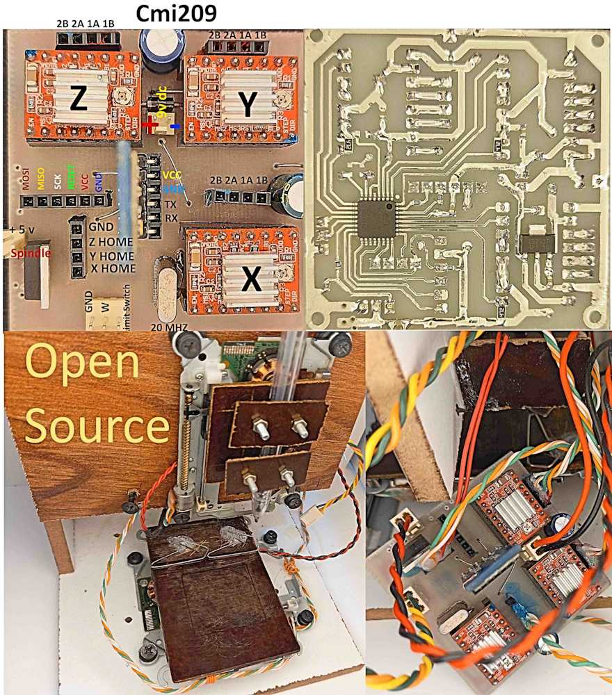
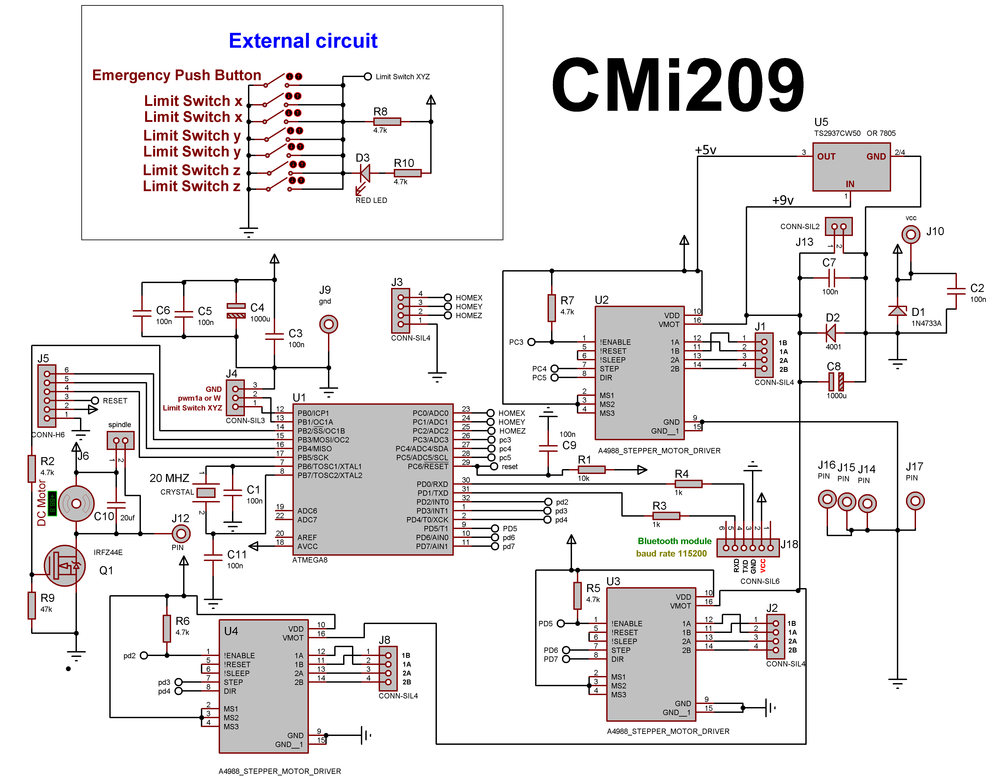
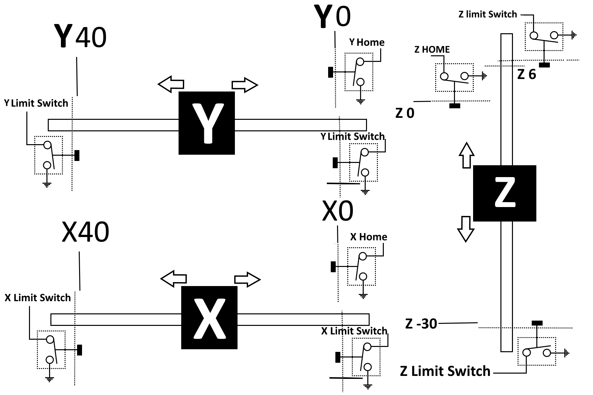
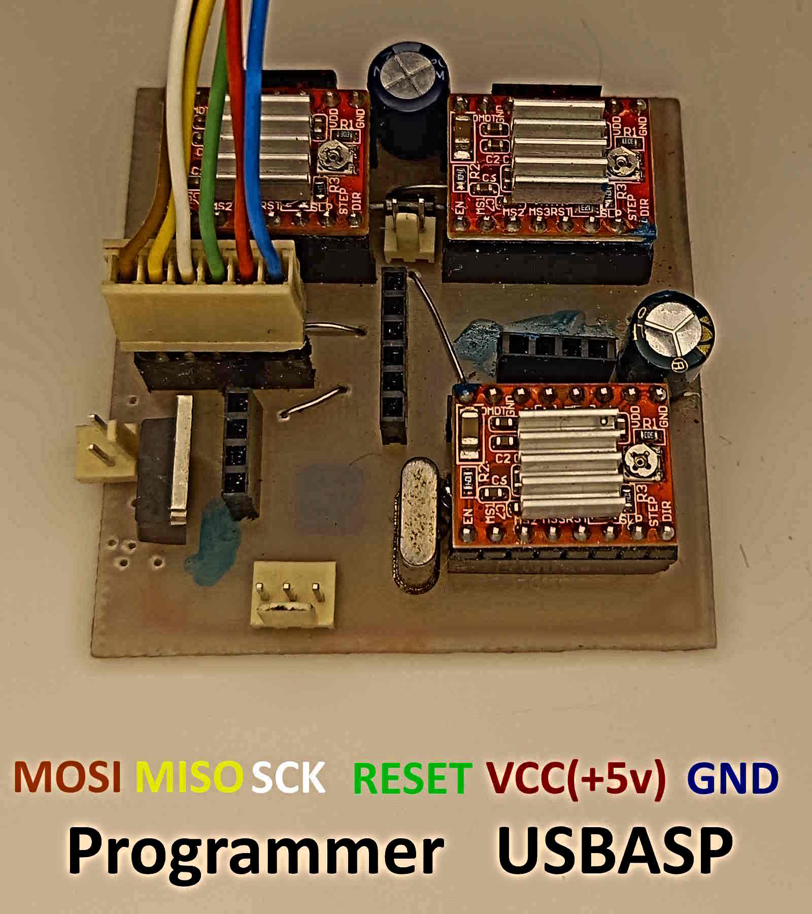

CMI209 is a CNC-like module based on the ATmega328P microcontroller. It is controlled by the Soifgo Android app through the CMI (CNC Mobile Interface). Communication is done via a Bluetooth module at a baud rate of 115200.

The following files are included in the project: PCB file, programmer file, BASCOM file, Proteus file, and reference images. All of these files are available for download at the end of the page.
The following settings are stored in memory:
pulse=100
This means that 100 pulses move the stepper motor by 1 mm in this project. If you use a different device, adjust the pulses per millimeter value in Soifgo.
Max_x=40 Max_y=40 Max_z=40
The maximum travel range for the X, Y, and Z axes is 40 mm for this setup.
feedm=1200
Default movement speed is set to 1400 mm/min. If no speed is received, the module uses the stored/default speed value.
feeds=5.7
This is the speed correction coefficient used to match the machine behavior. In this device, the measured value is 5.7.
These commands can be received either from G-code or entered manually. Values are in millimeters, and uppercase letters must be used.
Examples:
X12 Y2 Z-3
For X and Y, decimal values, zero, and positive values are allowed. For Z, negative values are also allowed.
Length and width are defined from 0 to their maximum limits. Height has a special meaning because it depends on identifying the work surface. After setting the work surface, the Z axis must be zeroed using:
resetz
Then, to move the tool to a safe height, for example 5 mm above the surface:
Z5
To move downward by 1 mm:
Z-1
To zero the X and Y axes:
resetx resety
An initial spindle control circuit is included on the board. If you control the module using PWM, do not install the MOSFET input; instead, use the PWM input.
Spindle speed can be set up to 20,000 RPM. The corresponding PWM output range is 0 to 1024 (10-bit). This command can be used in both G-code and manual mode, using uppercase letters.
S0
Spindle off
S12000
Spindle speed set to 12,000 RPM
If no initial speed is received, the default speed described above is applied. In both G-code and manual mode, you can send values between 1 and 4800.
F600
Feed speed: 600 mm/min (uppercase letters)
Another reserved PWM output is available on the board, near the limit switch pins. It is intended for manual control tasks and can be used for:
The output range is 0 to 1024 (10-bit):
W510
The module supports linear G-code and arc G-code. It also supports a manual method for drawing arcs or circles.
A full circle with a 10 mm radius at X=20, Y=20, and a depth of 1 mm:
Before this command, raise the tool:
Z5 A0B360X20Y20Z-1
In arc drawing and arc G-code, the number of points used to generate the circle is initially set to 50. If needed, you can reduce it for a polygon-like shape, such as a hexagon, or increase it up to a maximum of 99 for higher precision.
res23
Sometimes it is necessary to wait before starting an action, for example in plasma cutting where a few seconds of delay may be needed before piercing. The following command creates a delay in seconds, from 1 to 300 seconds:
sec2
Sometimes the axes need to move manually in small or large increments. For example, movement in 0.5 mm steps for X, Y, and Z (0.001 to 999) using signed lowercase commands:
+x0.5 -x0.5 +y0.5 -y0.5 +z0.5 -z0.5
The home or initial position of the machine is available through:
G28
and in the module:
home
Both commands move the axes to the home position.

A dedicated input is provided in the module so that when it is pulled low, the axes, spindle, and the entire machine stop.
In most machines, limit switches are installed at the end of each axis travel so that the machine is not damaged if it moves beyond its allowed range. All switches are wired in parallel, including the emergency stop push button. The circuit and wiring should be done according to the schematic.
When this fault occurs, the module will no longer accept movement commands unless the error is cleared, the machine is power-cycled, or the following command is sent through Soifgo:
resetall
If the axis remains stuck on the protective limit switch and the fault is not cleared, the module will return to the stop state again.
A dedicated stop command is also available through Soifgo:
stop
When this command is sent, the machine stops and requires:
resetall
to resume operation.
This module uses three stepper motor driver modules. If you want to use another driver, do not install the onboard modules. Instead, use the four pins provided for each axis to connect an external driver:
GND ENABLE STEP DIR

This is a lightweight CAD-CAM tool for creating 2D vector shapes, editing them, and generating G-Code for CNC machines. All coordinates are in millimeters (mm) within a user-defined work area. The app is fully touch-compatible and saves your work automatically in your browser.
Click the Shapes dropdown and choose:
Tap & hold or hover to see zoomed view.
Edit absolute coordinates of shapes.
Mini CAD-CAM V3.0.0 — Full Feature Set • LocalStorage Auto-Save • Canny Edge • Magnifier